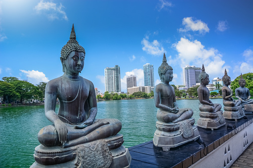

Each place, and each smile in Sri Lanka has a story to tell.
We have so much to share with you, so come along to our island in paradise!
Despite its small size Sri Lanka boasts of one of the highest rates of biological endemism in the world whether in plants or animals and is included among the top five biodiversity hotspots in the world. Of the ninety-one species of mammals found in Sri Lanka Asian elephants, sloth bear, leopards, sambar and wild buffaloes engages the majority of the attention of wildlife enthusiast. Yet the rarest mammals of Sri Lanka are the red slender Loris, Toque Macaque, and Purple-faced Langur, who according to IUCN clarifications are endangered due to habitat loss.
With a population composed with many a races and religions, Sri Lanka is never short of festivals and celebrations. Every month brings a celebration either religious or cultural importance, making Sri Lanka one of the countries with highest number of celebrations and holidays.The Sinhala-Tamil New year festival in April is the most important cultural festival in the country. The festival marks the beginning of the New Year and the end of harvesting season. A lengthy holiday and a table full of oily traditional delicacies like kokis, makes the New Year festival one of the long awaited festivals in the country.
With a history expanding over 3000years, Sri Lanka holds some of world’s ancient cities including Anuradhapura, Polonnaruwa and Digamadulla; their once glorious townships, palaces, temples, monasteries, hospitals and theaters intricately carved and modeled out of stone lay and abandoned and forgotten with time amidst the soaring jungles.Of all the ancient cities of Lanka, the most famed and most exquisite is the Kingdom of Anuradhapura. Sigiriya, a fifth century AD fortress and a water garden displays some of the most futuristic elements of landscaping and some of the oldest murals recorded in the country.